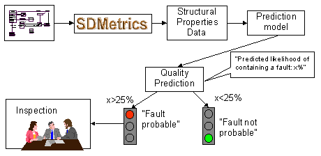

| Prev - Next - Down | SDMetrics - the UML design measurement tool |
In the following, we describe how to build and use a prediction model for class fault-proneness from the structural properties of a class. Figure 32 depicts the steps involved in building the prediction model.
Figure 32: Building a Prediction Model
The starting point is a system design that has been created in the past. We apply SDMetrics to the design to obtain structural properties data for the classes in the design, collected from the various diagram types (class, object, collaboration, sequence, and state diagrams). In addition, fault data (e.g., from inspections, testing, or post-release faults) has to be collected and the faults per class recorded.
We now have a set of classes enriched with structural properties data and fault data. On this data set we perform a statistical analysis (e.g. classification or regression analysis) to identify relationships between fault data and structural properties. The result of this analysis is a prediction model, e.g., in the form of a regression equation. The prediction model computes a predicted fault-proneness or predicted number of faults from the structural properties of a class. This model can be used to make predictions for new classes, as depicted in Figure 33.
The starting point in applying the prediction model is a new design candidate. We apply SDMetrics to this design to again obtain the structural properties measurement data for the classes. This data is then fed into the prediction model. Using the now known relationship between the structural properties and faults, the prediction model calculates, for instance, for each class a probability that a fault will be found in the class upon inspection.

Figure 33: Using the Prediction Model
The output of the prediction model is useful for decision-making. For instance, we may decide that for classes with a high predicted fault-proneness, say, above 25%, the class design shall undergo quality assurance (QA) activities such as inspections, extensive unit testing etc. Or, we may rank the classes by their predicted fault-proneness, and select the highly fault-prone classes from the top of the list for QA activities, until the allocated resources for QA are depleted.
Thus, the effort for QA activities can be focused on the classes that are more likely to contain faults. The benefits are manifold:
Prediction models for other system qualities can be built in the same way, for example, models to predict implementation and test effort from design size.
The advantage of using prediction models is that they provide a mapping from hard-to-interpret design measurement data ("size=12, coupling=7, ...") to easily interpreted external quality data ("predicted fault-proneness of class X: 78%", "predicted effort to implement package Y: 104 person hours"). The result is an absolute, quantitative statement (within certain error bars) about the external quality of a system, expressed in the same unit in which the external quality is measured.
Also, prediction models address the problem that a complex system quality attribute such as fault-proneness is influenced by many factors - various dimensions of size, coupling and so on. Approaches such as quality benchmarks, which investigate one design metric at a time to characterize fault-proneness, fail to take the combined effect of all factors into account. Prediction models provide a sound method to combine these multiple factors into one cohesive model.
Empirical evidence shows that highly accurate prediction models can be built from structural properties, and that they are beneficial in highlighting trouble areas, as well as in supporting project planning and steering [BWDP00, BWL01, BMW02, CK98, NP98, LH93].
| Prev | Up | Next |
| Section 6.3.4 "Quality Benchmarks" | Contents | Section 7 "SDMetrics Metamodel and XMI Transformation Files" |